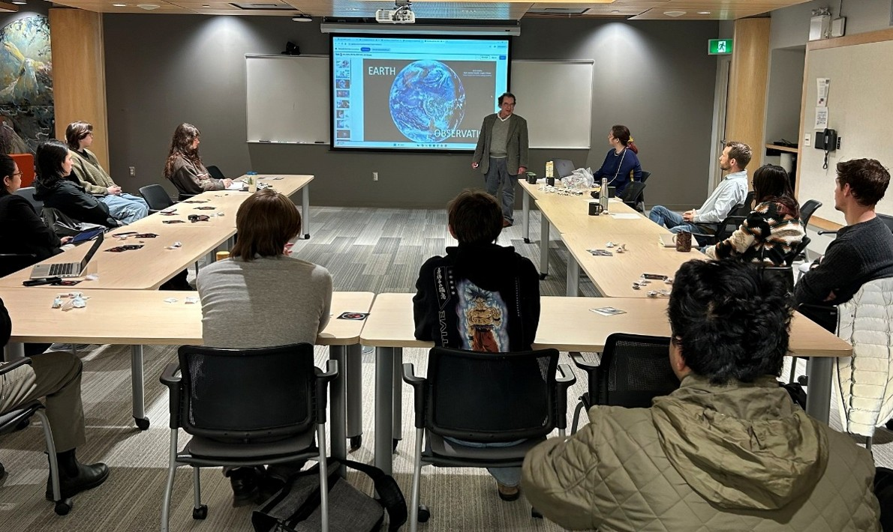
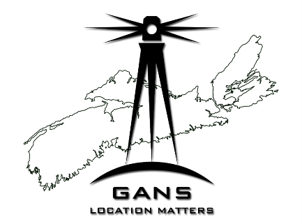
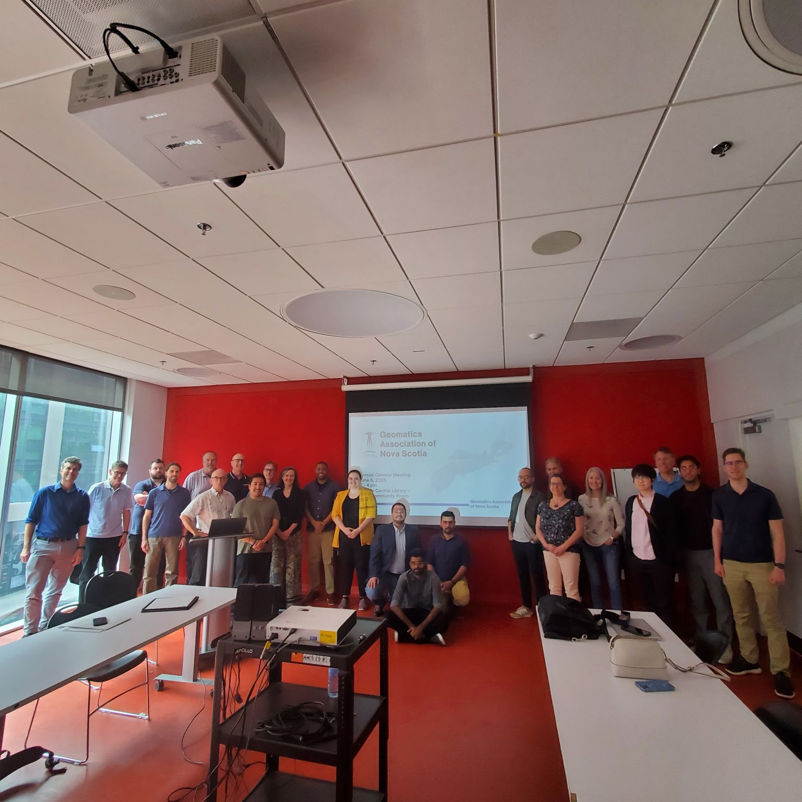
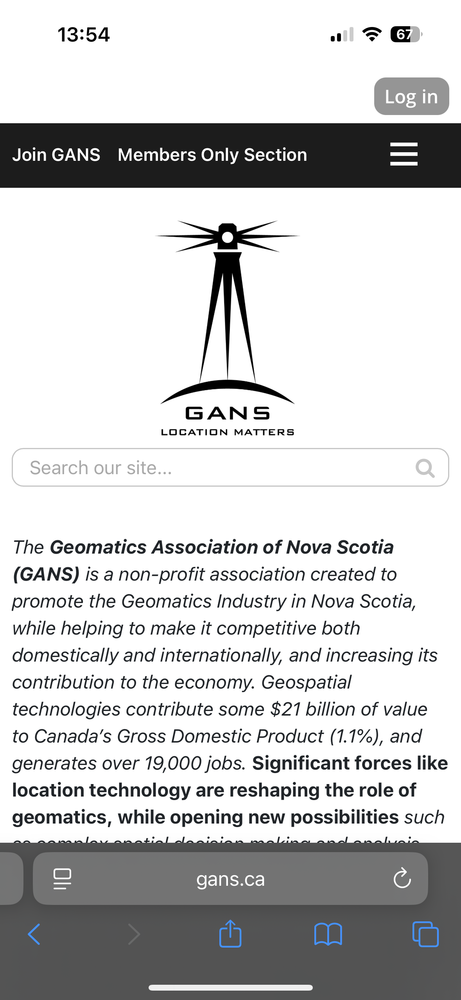
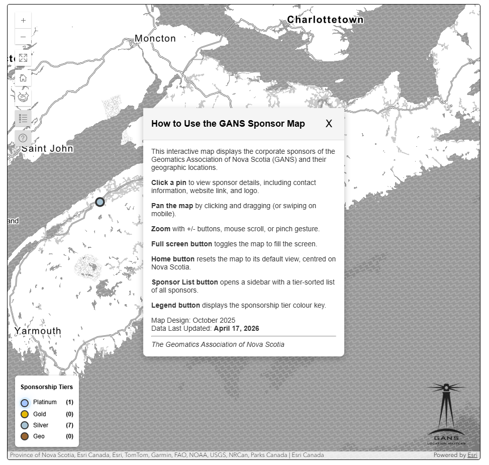
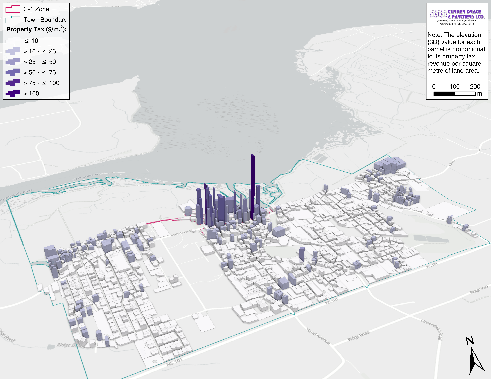
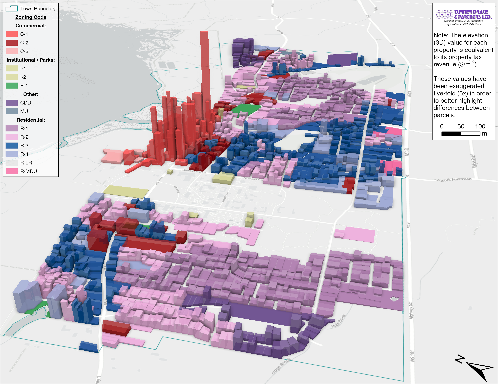
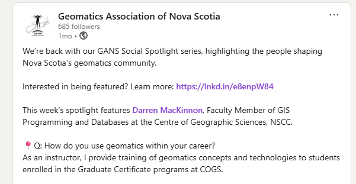

Geomatics Association of Nova Scotia
Spring 2026 Newsletter
President's Address
The focus of GANS this past year has been creating the Future Strategy Committee. More information regarding this committee can be found further in this newsletter thanks to our Co- Chairs (Simeon Roberts, Brad Ashley). An additional huge thank-you to all of you that attended our 2025 Strategic Session last March and those that have dedicated their time to the Committee.
As always, GIS Day was a blast (pun intended)! We held a hybrid lecture at Saint Mary’s University, with presentations by Jean Bergeron and Dirk Werle of the Canadian Space Agency. The university mentioned GANS as part of the 50th anniversary of their Geography and Environmental Studies Department.

Thank you to our Board of Directors, who volunteer their time to promote geomatics in Atlantic Canada. If you are interested in becoming a Director, please reach out and attend our Annual General Meeting on June 25, 2026.
Until then, wishing you all well from NAD83 UTM Zone 20N!
Miranda Frison President | Geomatics Association of Nova Scotia (GANS)
2026 GANS Annual General Meeting
The 2026 GANS Annual General Meeting is approaching! Please join us Thursday, June 25th, from 2:00–4:00 PM at the Halifax Central Library (Room 301), located at 5440 Spring Garden Road, Halifax.
Room 301 can be accessed via elevator or stairs. Upon reaching the third floor, turn right and continue to the opposite end of the floor.
The meeting will feature speakers from GANS and our industry sponsors, followed by a social event afterward (details to be announced).
Registration is free and open to GANS members only. We hope to see you there!
Register here: https://gans.ca/event-6705227/

GANS Future Strategy Committee Update
Following the 2025 Strategic Session at Inn on the Lake, the GANS Board of Directors established the GANS Future Strategy Committee to consider the future direction of the association and how it can continue to support Nova Scotia’s geomatics community in a meaningful and sustainable way.
The committee was formed at an important point in GANS’ history. The geomatics profession continues to grow in importance across infrastructure, land management, planning, emergency response, utilities, environmental work, digital transformation, and many other areas of Nova Scotia’s economy. At the same time, volunteer-led organizations like GANS must be realistic about capacity, funding, participation, and the level of effort required to deliver lasting value to members, sponsors, students, and the broader community.
The committee brings together volunteers from across the geomatics community, including representatives from private industry, government, academia, students, and early-career professionals. Its work has been organized into three focused groups: Education, Professional Development and Events; Industry Advancement, Alliances and Community Building; and Membership, Sponsorship and Funding.
Together, these groups have examined how GANS can rebuild visibility, strengthen community engagement, support professional development, expand networking opportunities, connect with students and emerging professionals, and explore realistic models for long-term sustainability. A central theme of this work has been balancing opportunity with capacity—recognizing that while many paths forward exist, success will depend on approaches that are practical, focused, and achievable.
The role of the Future Strategy Committee is to provide the Board with clear recommendations for the organization’s next stage. The committee’s final report and recommendations are expected to be submitted to the GANS Board in early June, with the goal of presenting high-level findings to the membership at the upcoming AGM.
Co-Chairs of the GANS Future Strategy Committee
Simeon Roberts
Brad Ashley
Organization Website Updates
The GANS organization website (www.gans.ca) has been updated to improve usability, accessibility, and overall user experience across a range of devices. Updates include a more modern interface, mobile compatibility, and general cleanup to ensure the layout remains current and easy to navigate.
Key improvements include:
- Improved mobile experience
- Refined visual design, including improved styling and interface elements
- Removal of outdated content, use of updated iconography
- Enhanced sponsor footer, organized by tier and responsive
In addition to the above, a new interactive Sponsor Map (https://gans.ca/sponsor-map) has been launched to showcase GANS sponsors across Nova Scotia. This tool allows users to explore sponsor locations and view detailed information.
We hope that this provides a more engaging way for us to recognize our sponsors, while offering members an intuitive way to explore the organizations supporting GANS.


Upcoming Events
- 2026 GANS AGM - June 25, 2026, Halifax Central Library - Register Here!
- International Society for Photogrammetry and Remote Sensing - July 4-11, 2026, Toronto - Register Here!
- 2026 Esri User Conference Watch Party - July 13, 2026 - Register Here!
- Esri Canada User Conference - October 21-22, 2026, Toronto - Details Here!
- Canada’s National GoGeomatics Expo - October 26-28, 2026, Calgary Register Here!
Sponsor Highlights
Turner Drake & Partners Ltd. recently supported the Town of Wolfville's municipal planning initiatives through a spatial analysis of municipal property tax revenue density. This project was undertaken to better understand the financial value of different land uses and development patterns across Wolfville. By calculating appropriate tax levies for all taxable property parcels (i.e., commercial, residential, etc., while excluding Acadia University, the nearby hospital, and Town-owned lands), they were able to derive tax revenue density (revenue per unit of land).
The resulting dataset helped inform decisions related to rezoning and updates to their municipal planning strategy. To further support analysis and communication of the findings, Turner Drake & Partners Ltd. also produced 3D visualizations (pictured below) showing applicable properties in Wolfville, with the elevation of each property representing its tax revenue per square metre.


Board of Directors
- Miranda Frison, President
- Bradley Ashley, Past President
- Vicki Gazzola
- Liam Gowan
- Dave MacLean, Treasurer
- Aaron McGill
- Jeff McKenna
- Simeon Roberts
Created by the Communications Committee
- Liam Gowan
- Daniel Jewell

Sponsors
Platinum Sponsors

Silver Sponsors


© Geomatics Association of Nova Scotia (GANS)
GANS Social Spotlight
We've launched the GANS Social Spotlight! Each week, we're highlighting members of Nova Scotia's geomatics community on our LinkedIn page sharing their experiences, career paths, and projects.
Anyone working or studying (including recent graduates!) in the geomatics field within Nova Scotia is welcome to be featured.
Interested in being featured? Please visit: https://gans.ca/gans-social-spotlight
